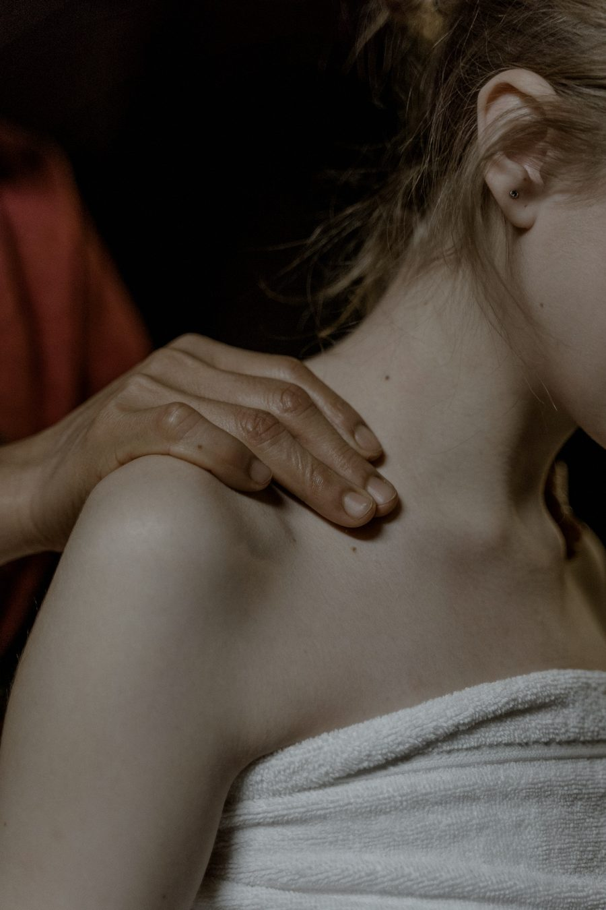

Osteopatía
Buscar la causa, aunque esté lejos del síntoma.
Mira el cuerpo como un conjunto: articulaciones, vísceras, cráneo y tejido conectivo relacionados entre sí. Trabaja para devolver movilidad a lo que se ha quedado rígido y dejar que el cuerpo se reorganice.
Cuándo elegirla
- Dolores que vuelven y no tienen un origen claro.
- Bloqueos de espalda, cuello o pelvis.
- Molestias digestivas o tensionales con componente mecánico.
- Dolores de cabeza y mandíbula de origen tensional.
